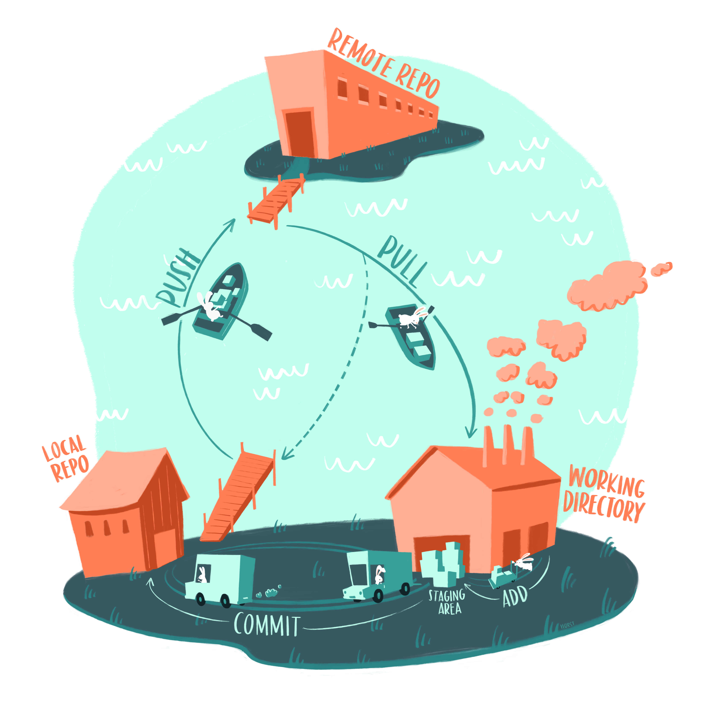
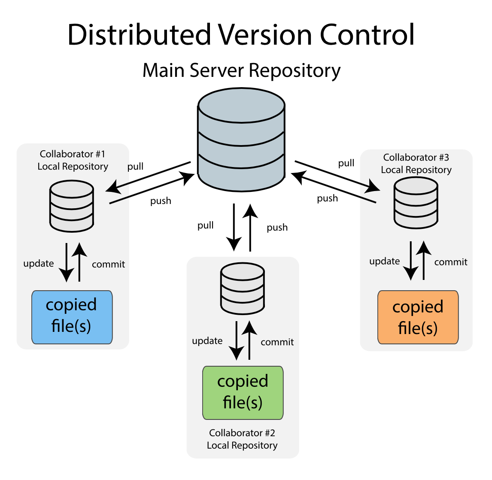
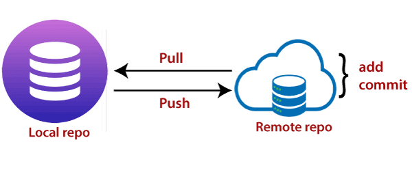
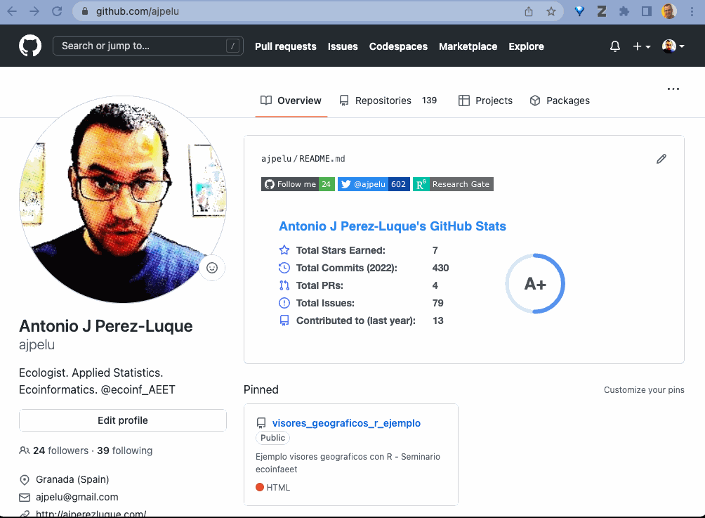
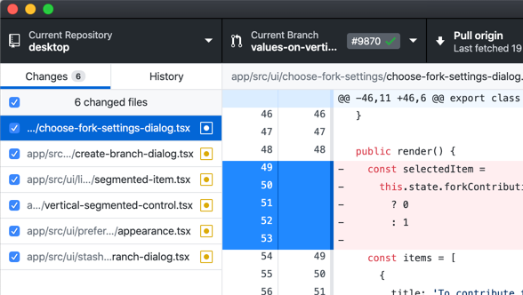

![]()



Control de Versiones con Git y GitHub
¿Has experimentado alguna de estas situaciones en tu trabajo diario?
¿Qué es el control de versiones?
El control de versiones es un sistema que registra los cambios realizados sobre un archivo o conjunto de archivos a lo largo del tiempo, de modo que podamos recuperar versiones específicas más adelante
- Se puede utilizar sobre cualquier archivo.
- Permite:
- Revertir archivos (proyecto) a un estado anterior
- Comparar cambios a lo largo del tiempo
- Facilita la identificación de errores
Registro de cambios

Registro de cambios (varios usuarios)

Integración de cambios

Sistemas para el control de versiones

- ProGit book
- Otros:
- Subversion
- Concurrent Version System CVS
Git
- Sistema avanzado de control de versiones distribuido
- Permite rastrear el progreso de un proyecto mediante capturas
- ¿Qué cambios?
- ¿Dónde?
- ¿Quién los hizo?
- ¿Por qué?

GitHub
- Un website donde alojar repositorios
- Interfaz para explorar repositorios
- Permite colaborar de una forma más eficaz:
- Compartir repositorio
- Ver cambios
- Corregir errores
- Discutir y Revisar cambios
Recursos sobre Git
- Interactive Tutorial Git (CodeSchool)
- Git - the simple guide (Roger Dudler)
- Git and GitHub (Hadley Wickham)
- A brief introduction to git & GitHub (Karl Broman & Samuel G. Younkin)
- A basic tutorial to version control using git (Jon Lefcheck)
- Git/Github guide a minimal tutorial (Karl Broman)
- Getting Git Right (Atlassian)
- Recopilación de tutoriales (F. Rodríguez-Sánchez)
- Guía Visual de Git
- Introducción al funcionamiento y uso de git y github
Ciclo de Git
Ciclo de Git

Instalar Git
- Instala Git en tu ordenador. Puedes usar la documentación oficial
Configurar Git
git config --global user.name
git config --global user.email git config --global user.name "Fulanito Menganito"
git config --global user.email micorreo@gmail.com
Note
Vamos a usar Github, por tanto la dirección de correo que indiques ha de ser la misma con la que te registres en GitHub.
- En cualquier momento podemos ver las opciones de configuración
git config --listCrear un repositorio nuevo
- Abre la consola de comandos
- Crea un directorio nuevo y ábrelo1
mkdir <nombre_directorio>mkdir datos
cd datosIniciar un repositorio
- Para iniciar un repositorio utilizamos el comando
Note
¿Que ha ocurrido en nuestro directorio?
- Inspeccionar el directorio
cd mi_primer_repositorio
ls -a
cd .gitAñadir cambios
Crea un archivo de texto dentro del directorio, escribe algo y nómbralo miarchivo.txt
Añade el archivo a la staging area
git add <nombre_archivo>git add miarchivo.txt- Si quiero añadir todos los archivos
git add . Registrar cambios
git commit -m "Commit message""
Important
El mensaje nos servirá para indicar lo que hemos hecho.
- Recomendaciones de buenas prácticas para commits
- Algunas convenciones para commits
git commit -m "Escribo mis datos personales en archivo"[master (root-commit) 71fe224] Escribo mis datos personales en archivo
1 file changed, 2 insertions(+)
create mode 100644 miarchivo.txt

Enviar cambios a Repositorios Remotos
- Nuestros cambios están en el
HEAD(copia local) - Queremos enviar los cambios a un repositorio remoto
Caution
Necesitamos un repositorio remoto (GitHub):
- Crear
- Clonar
git remote add origin <url server>
git remote add origin https://github.com/ajpelu/teach_git_ejemplo.gitCrear repositorio en GitHub


Enlazar repositorio local y remoto
URL:
https://github.com/ajpelu/teach_git_ejemplo.git
git remote add origin <url server>
git remote add origin https://github.com/ajpelu/teach_git_ejemplo.gitEnviar
- Para enviar cambios (una vez conectados) a un repositorio remoto
- Nos pedirá usuario y contraseña
git push origin master
Warning

Clonar un repositorio

Clonar un repositorio
- Importante para reproducibilidad
- Colaboración
- Repositorio remoto (
GitHub) - 2 formas (diferencias)
# git clone <url>
git clone https://github.com/ajpelu/teach_git_ejemplo.git # git clone username@host:/path/to/repository
git clone git@github.com:ajpelu/teach_git_ejemplo.git Actualizar un repositorio local

Actualizar un repositorio local
¿Existe alguna información nueva en mi repositorio remoto?
git fetch ¿Existe alguna información nueva en mi repositorio remoto y quiero que esté en mi repositorio local?
git pull
Warning
- Prestar atención a la rama!!
git pull origin master Otros comandos

Anexo. Formas de usar git: shell

Anexo. Formas de usar git: git-GUI
- Clientes de git GUI (Guest User Interfaces)

Anexo. Formas de usar git: R-studio

¿Alguna duda?
Ayuda JDC2022-050056-I financiada por MCIN/AEI /10.13039/501100011033 y por la Unión Europea NextGenerationEU/PRTR

Si usas esta presentación puedes citarla como:
Pérez-Luque, A.J. (2025). Control de Versiones con Git y GitHub. Material Docente de la Asignatura: Ciclo de Gestión de los Datos. Master Universitario en Conservación, Gestión y Restauración de la Biodiversidad. Universidad de Granada. https://ecoinfugr.github.io/ecoinformatica/
Footnotes
Citation
BibTeX citation:
@online{j._pérez-luque2025,
author = {J. Pérez-Luque, Antonio},
title = {Control de {Versiones} Con {Git} y {GitHub}},
date = {2025-01-20},
langid = {en}
}
For attribution, please cite this work as:
J. Pérez-Luque, Antonio. 2025. “Control de Versiones Con Git y
GitHub.” January 20, 2025.